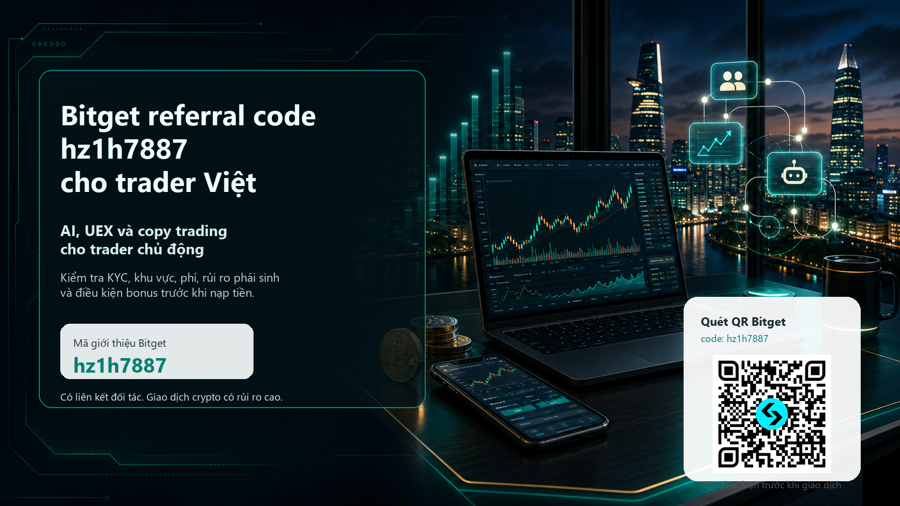

Bitget referral code hz1h7887 cho trader Việt Nam
Nếu bạn đang tìm mã giới thiệu Bitget, Bitget referral code, mã invite, mã bonus hoặc mã khuyến mãi Bitget cho tài khoản mới, mã cần kiểm tra là hz1h7887. Trang này không chỉ đặt một đường link đăng ký. Mục tiêu là giúp trader Việt Nam hiểu vì sao Bitget có thể đáng để xem xét trong năm 2026, điều kiện nào phải tự kiểm tra trước khi nạp tiền, và cách dùng bonus mà không biến nó thành lý do giao dịch quá mức.

Mở Bitget bằng mã hz1h7887
Đường link dưới đây là liên kết đối tác. Chúng tôi có thể nhận hoa hồng nếu bạn đăng ký hoặc giao dịch qua link này. Hãy mở trang chính thức, kiểm tra mã hz1h7887, điều kiện bonus, khu vực, KYC, phí và sản phẩm được phép trước khi nạp tiền.
Không phải tư vấn tài chính, pháp lý hay thuế. Không dùng VPN hoặc thông tin sai để né hạn chế khu vực.
Vì sao không nên chỉ nhìn vào bonus?
Người mới thường tìm “Bitget bonus code” vì muốn nhận quà đăng ký. Trader hoạt động lâu hơn lại có câu hỏi khác: sàn có đủ thanh khoản không, phí có minh bạch không, copy trader có đáng tin không, công cụ AI có giúp ra quyết định có kỷ luật hơn không, có hỗ trợ VND hoặc P2P không, và nếu thị trường đảo chiều thì rủi ro được kiểm soát thế nào. Bài này được viết cho nhóm thứ hai. Bonus có thể giúp giảm ma sát ban đầu, nhưng doanh thu referral bền vững chỉ đến từ người dùng hiểu sản phẩm, biết tự bảo vệ vốn và tiếp tục giao dịch sau khi phần thưởng ban đầu kết thúc.
Với Việt Nam, góc tiếp cận càng phải cẩn trọng. Thị trường tài sản mã hóa tại Việt Nam đang có khung thí điểm và các quy định mới, trong khi dịch vụ của một sàn quốc tế có thể thay đổi theo khu vực, giấy phép, KYC và đối tác thanh toán. Vì vậy, nội dung này đặt phần kiểm tra pháp lý, điều kiện và rủi ro ngang hàng với phần lợi ích. Nếu bạn không được phép dùng một sản phẩm tại nơi cư trú của mình, hoặc không hiểu rõ phái sinh, margin, bot hay copy trading, đừng mở vị thế chỉ vì có mã referral.
Điểm mới đáng chú ý của Bitget cho trader chủ động
1. GetAgent Playbook và AI trading workflow
Điểm mới nhất có sức hút với trader chủ động là GetAgent Playbook. Bitget mô tả Playbook như một lớp workflow chiến lược trong GetAgent và Bitget AI, chuyển AI trading từ kiểu hỏi đáp sang các quy trình có cấu trúc. Nói đơn giản, thay vì chỉ hỏi một chatbot “mua hay bán?”, người dùng có thể xem một kịch bản giao dịch có sẵn: điều kiện thị trường nào phù hợp, tín hiệu nào cần theo dõi, khi nào kích hoạt, rủi ro được quản trị ra sao và khi nào phải dừng.
Đây là hook tốt để thu hút referral chất lượng vì nó đánh vào nhu cầu thật: giảm hỗn loạn khi thị trường chạy nhanh. Tuy nhiên, AI không loại bỏ rủi ro. Một Playbook vẫn cần dữ liệu đúng, cấu hình phù hợp, giới hạn vị thế và kỷ luật dừng lỗ. Nếu dùng AI để hợp thức hóa cảm xúc FOMO, kết quả có thể còn tệ hơn giao dịch thủ công. Cách đúng là xem AI như một bộ checklist có nhật ký, không phải người dự đoán chắc chắn.
2. UEX: một tài khoản cho crypto, stock exposure và nhiều workflow
Bitget tiếp tục đẩy mạnh thông điệp Universal Exchange, hay UEX. Với trader Việt, điều này có nghĩa là một tài khoản có thể gom nhiều nhu cầu: spot crypto, futures, copy trading, bot, sản phẩm Earn, tokenized stock hoặc stock perpetual nếu đủ điều kiện. Lợi ích không nằm ở việc “có thật nhiều sản phẩm”, mà ở khả năng so sánh chi phí, thanh khoản và rủi ro giữa các công cụ trong cùng một nơi.
Ví dụ, người dùng quan tâm cổ phiếu Mỹ có thể đọc về Bitget Stocks 2.0, rTokens, Stock Tokens, stock perps và cách dùng USDT để tiếp cận một số sản phẩm. Nhưng tokenized stock không giống sở hữu cổ phiếu truyền thống tại broker. Một số sản phẩm chỉ tạo exposure kinh tế, một số có điều kiện riêng về dividend, phí, thanh khoản, đòn bẩy, funding hoặc khu vực. Đây là lý do bài viết dùng cụm “kiểm tra trước khi nạp tiền” nhiều lần: cùng một tên sản phẩm có thể có quyền lợi và rủi ro khác nhau tùy nơi cư trú và thời điểm.
3. RWA và thanh khoản: câu chuyện đáng xem, không phải lời hứa lợi nhuận
Bitget và Block Scholes đã công bố nghiên cứu về thanh khoản của thị trường RWA perpetual, trong đó nhấn mạnh tokenized equity và commodity markets trên Bitget đã trưởng thành hơn trong năm 2026. Với trader hoạt động nhiều, thanh khoản quan trọng hơn khẩu hiệu. Order book sâu hơn có thể giúp spread dễ chịu hơn và giảm trượt giá, nhưng nó không biến một sản phẩm phái sinh thành ít rủi ro. RWA perps, stock perps và tokenized markets vẫn có thể biến động mạnh, chịu rủi ro funding, liquidation, oracle, sự kiện ngoài giờ và chênh lệch giữa tài sản tham chiếu với sản phẩm giao dịch.
Đối với nội dung referral, góc RWA hữu ích vì nó cho thấy Bitget không chỉ là nơi mua BTC rồi để đó. Nó là một bộ công cụ cho người muốn theo dõi nhiều nhóm tài sản. Nhưng CTA phải đi kèm cảnh báo: nếu bạn chưa từng quản lý vị thế phái sinh, hãy bắt đầu bằng đọc tài liệu, demo, size nhỏ, giới hạn lỗ và không dùng toàn bộ vốn cho một ý tưởng.
Bitget có phù hợp với trader Việt Nam không?
Bitget có nhiều trang hỗ trợ liên quan Việt Nam, trong đó có nội dung nói về VND trên P2P và hỗ trợ nạp/rút ngân hàng bằng VND với điều kiện KYC. Điều này làm cho Bitget đáng được đưa vào danh sách kiểm tra của người dùng Việt. Tuy nhiên, “có hỗ trợ VND” không có nghĩa là mọi sản phẩm đều sẵn cho mọi người Việt Nam. Phí, hạn mức, nhà cung cấp thanh toán, P2P merchant, nạp/rút, futures, stock products và bonus có thể khác nhau theo tài khoản, KYC, khu vực và thời điểm.
Việt Nam cũng đã triển khai khung thí điểm thị trường tài sản mã hóa theo Nghị quyết 05/2025/NQ-CP, có hiệu lực từ 09/09/2025 và thời gian thí điểm 5 năm. Cổng Chính phủ mô tả phạm vi quản lý gồm chào bán, phát hành tài sản mã hóa, tổ chức thị trường giao dịch tài sản mã hóa và cung cấp dịch vụ tài sản mã hóa. Điều này tạo bối cảnh pháp lý quan trọng, nhưng không nên hiểu là mọi sàn nước ngoài đều mặc nhiên được cấp phép hoặc mọi hoạt động crypto đều không có ràng buộc. Trước khi dùng Bitget hoặc bất kỳ sàn nào, hãy tự kiểm tra quy định hiện hành, thuế, nghĩa vụ báo cáo, giấy phép của nhà cung cấp dịch vụ và điều khoản của chính sàn.
Checklist trước khi dùng mã giới thiệu Bitget hz1h7887
| Việc cần kiểm tra | Câu hỏi thực tế | Vì sao quan trọng |
|---|---|---|
| Mã referral | Trang đăng ký có hiển thị hz1h7887 hoặc đường link có vipCode=hz1h7887 không? | Nếu mã không được gắn trước khi đăng ký, bonus/cashback có thể không áp dụng. |
| Điều kiện bonus | Bonus “up to 6200 USDT” yêu cầu KYC, nạp tiền, volume hay nhiệm vụ cụ thể nào? | Bonus thường không phải tiền tặng vô điều kiện. |
| Cashback/phí | 20% fee cashback áp dụng cho sản phẩm nào, trong bao lâu, và có giới hạn không? | Trader hoạt động cần tính phí thực sau rebate, funding và spread. |
| KYC/VND | Tài khoản của bạn có đủ KYC để dùng P2P, bank deposit, fiat services hoặc futures không? | KYC ảnh hưởng trực tiếp đến nạp/rút, hạn mức và quyền truy cập sản phẩm. |
| Khu vực | Việt Nam, nơi cư trú, giấy tờ và địa chỉ của bạn có được hỗ trợ cho sản phẩm định dùng không? | Không nên dùng VPN hoặc thông tin sai để né hạn chế. |
| Rủi ro sản phẩm | Bạn hiểu spot, futures, stock perps, tokenized stocks, bot và copy trading khác nhau thế nào? | Sai sản phẩm có thể dẫn đến liquidation, phí funding hoặc rủi ro ngoài dự kiến. |
Copy trading và bot: điểm hút referral, nhưng phải nói thật về rủi ro
Bitget nổi tiếng với copy trading. Với người Việt mới bước vào thị trường, copy trading nghe rất hấp dẫn vì có thể theo một trader có lịch sử lợi nhuận. Nhưng lịch sử lợi nhuận không đảm bảo tương lai. Một master trader có ROI cao có thể dùng đòn bẩy lớn, chịu drawdown sâu hoặc chỉ phù hợp với một giai đoạn thị trường. Nếu bạn copy mù quáng, bạn không thực sự giao dịch; bạn chỉ chuyển quyền quyết định rủi ro cho người khác.
Cách dùng copy trading có trách nhiệm là xem nó như nguồn học quy trình. Trước khi copy, hãy kiểm tra thời gian hoạt động, drawdown tối đa, số người theo, khối lượng, tần suất giao dịch, loại thị trường, đòn bẩy, cách đóng lệnh và tương quan giữa kết quả với điều kiện thị trường. Đừng copy bằng toàn bộ vốn. Đặt giới hạn lỗ, giới hạn vốn, và luôn chuẩn bị cho kịch bản master trader thay đổi hành vi.
Bot cũng tương tự. Grid bot, DCA bot hoặc công cụ tự động có thể giúp kỷ luật hóa entry, nhưng không biến thị trường giảm thành an toàn. Grid trong thị trường đi ngang có thể hoạt động khác hoàn toàn khi giá phá biên. DCA trong trend giảm mạnh có thể tăng rủi ro tập trung. Bot chỉ là một cách thực thi, không phải bảo hiểm.
Cách dùng bonus mà không làm hỏng kỷ luật
Mã hz1h7887 có thể giúp bạn tiếp cận welcome pack hoặc cashback nếu đủ điều kiện. Nhưng bonus nên được xem như “giảm chi phí thử nghiệm”, không phải lý do tăng size. Nếu điều kiện bonus yêu cầu volume, hãy hỏi: volume đó có phù hợp với chiến lược của bạn không, hay bạn đang trade chỉ để mở khóa phần thưởng? Nếu một nhiệm vụ yêu cầu nạp nhiều hơn mức bạn định dùng, bỏ qua nó cũng là một quyết định hợp lý.
Trader tốt thường có quy tắc trước khi nạp tiền: tổng vốn thử nghiệm, mức lỗ tối đa trong tuần, sản phẩm được phép dùng, mức đòn bẩy tối đa, số lệnh mỗi ngày, thời điểm dừng sau chuỗi thua, và cách rút một phần lợi nhuận. Referral page tốt phải khuyến khích những quy tắc đó. Chúng ta muốn referral trở thành active trader bền vững, không phải người đăng ký vì FOMO rồi biến mất sau một cú liquidation.
Quy trình đăng ký gợi ý
- Mở đường link referral chính thức ở trên hoặc quét QR.
- Kiểm tra mã hz1h7887 trước khi hoàn tất đăng ký.
- Đọc điều kiện bonus và cashback trên trang Bitget tại thời điểm đăng ký.
- Hoàn tất KYC nếu bạn cần fiat, VND, bank deposit, P2P, nạp/rút hoặc sản phẩm có yêu cầu xác minh.
- Kiểm tra sản phẩm bạn định dùng: spot, futures, tokenized stock, stock perps, copy trading, bot hoặc Earn.
- Nạp số vốn nhỏ trước, thử rút tiền, kiểm tra phí và hạn mức.
- Chỉ tăng khối lượng sau khi bạn hiểu phí, spread, funding, liquidation và quy tắc dừng lỗ.
Ai nên và không nên dùng Bitget?
Bitget có thể phù hợp với trader Việt đã hiểu cơ bản về crypto, muốn thử một sàn có copy trading, AI workflow, nhiều sản phẩm và hỗ trợ VND/P2P. Nó cũng đáng xem với người muốn so sánh tokenized stock hoặc stock exposure trong cùng một tài khoản crypto. Nhưng Bitget không phù hợp nếu bạn chưa hiểu rủi ro biến động, không chấp nhận KYC, muốn né quy định khu vực, cần bảo đảm lợi nhuận, hoặc định dùng đòn bẩy để “gỡ lỗ”.
Nếu bạn là người mới hoàn toàn, hãy bắt đầu bằng spot với size nhỏ, ghi nhật ký giao dịch, học cách đặt stop, kiểm tra phí và không dùng futures trong tuần đầu. Nếu bạn là trader kinh nghiệm, hãy dùng bài này như checklist: xem GetAgent Playbook có giúp quy trình của bạn rõ hơn không, UEX có gom được workflow không, thanh khoản có đủ cho cặp bạn trade không, và chi phí sau rebate có thực sự tốt hơn lựa chọn hiện tại không.
FAQ về Bitget referral code hz1h7887
hz1h7887 là gì?
hz1h7887 là mã giới thiệu Bitget cho chiến dịch này. Khi đăng ký qua link đối tác, hãy kiểm tra mã trước khi nạp tiền hoặc giao dịch.
Bonus 6200 USDT có chắc chắn nhận được không?
Không. Cách viết đúng là “up to 6200 USDT” hoặc welcome pack worth 6200 USDT. Điều kiện có thể phụ thuộc vào KYC, nạp tiền, nhiệm vụ, volume, khu vực và quy tắc Bitget.
Trader Việt Nam có dùng VND trên Bitget được không?
Bitget có tài liệu hỗ trợ liên quan VND trong P2P và bank deposit, nhưng quyền truy cập thực tế phụ thuộc vào tài khoản, KYC, đối tác thanh toán và quy định cập nhật. Hãy kiểm tra trong tài khoản của bạn trước khi chuyển tiền.
GetAgent Playbook có thay thế phân tích cá nhân không?
Không. Nó có thể giúp biến ý tưởng thành workflow có cấu trúc, nhưng bạn vẫn chịu trách nhiệm về dữ liệu, cấu hình, size, stop, sản phẩm và rủi ro.
Copy trading có an toàn hơn tự giao dịch không?
Không nhất thiết. Copy trading chuyển một phần quyết định cho người khác, nhưng vốn và rủi ro vẫn là của bạn. Hãy giới hạn vốn, kiểm tra drawdown và đừng copy chỉ vì ROI cao.
Công bố và cảnh báo rủi ro
Trang này có liên kết giới thiệu/đối tác. Chúng tôi có thể nhận hoa hồng nếu bạn đăng ký hoặc giao dịch qua liên kết đó. Crypto có biến động cao; futures, margin, copy trading, bot, tokenized stock, stock perps và RWA products có thể gây thua lỗ lớn, bao gồm mất toàn bộ vốn giao dịch. Bonus và cashback phụ thuộc điều kiện, khu vực, KYC, nạp tiền, khối lượng, sản phẩm và quy tắc của sàn. Nội dung này không phải tư vấn tài chính, đầu tư, pháp lý hay thuế.
Nguồn chính thức đã kiểm tra
- Bitget: GetAgent Playbook và AI trading workflows
- Bitget Support: GetAgent Playbook là gì?
- Bitget Academy: Tokenized U.S. stocks và Stocks 2.0
- Bitget và Block Scholes: RWA liquidity report
- Bitget Proof of Reserves
- Bitget P2P supported currencies: Vietnam VND
- Bitget bank deposits: VND and KYC note
- Bitget Terms of Use
- Chính phủ Việt Nam: Nghị quyết 05/2025/NQ-CP
- Toàn văn Nghị quyết 05/2025/NQ-CP